目录
引用（感谢）
特别感谢Silver nitrate对村庄源码的剖析。
同时感谢藏青茶壶提供的实验数据支持。
关于铁傀儡的生成检测范围参考了youtuber：RufusAtticus的视频：https://youtu.be/3XxKRTJj5_U(并在此基础上加以实验）
关于铁傀儡迷失范围判定来自与youtuber：
ばっち（https://www.youtube.com/c/bacchigames）的交流。
本次专栏由Silver nitrate和菟道三室戸共同完成。
写在前面
对应版本：【mcbe】1.16
作者的话：这次专栏是对村庄机制的一次近乎全面的解析，内容可能会涉及一些晦涩的语言，虽然关于基础知识会做适当的讲解，但是还是建议各位读者在对村庄机制稍有了解的前提下浏览。
同时对于一部分实验会附上游戏视频验证，便于大家理解。
其中涉及了没有源码验证的猜想（bug）部分，会做出相应的标注：
“（与源码不符）”“（无源码验证）”等，望慎重。
村庄机制基础
（作者Silver nitrate原帖链接：网页链接）
一：poi
一共有三种：1.床2.钟3.工作方块
二：村庄管理器
游戏中每个维度的所有村庄的生死存亡和poi分配都由一个叫村庄管理器的东西进行管理，一个维度有且仅有一个村庄管理器。
三：村庄行为
每gt在一定范围内（具体范围见下文）的村庄都会进行更新（做如下事情）：
1.POI处理
2.尝试刷新铁傀儡和猫
等等
四 村庄的建立
村庄管理器在处理poi请求的时候如果poi类型是床且附近(精确范围见下文)无村庄的时候会建立一个新村庄,注意一开始这个村庄是没有村民的(村民如何加入村庄见下文)。
五：居民系统
居民（包括村民和铁傀儡）每隔特定的间隔会执行一些事件，这个执行事件的gt暂且叫做居民刻。在居民刻村民做的其中一件事情是向管理器提交POI请求。还有一件事情就是：如果自己不属于任何村庄就会尝试加入离自己最近的村庄。（游戏中放床过一会儿村民才和床绑定是因为居民刻间隔较长）
其它具体细节见上方的专栏链接
【补充：每个村庄内的未绑定poi≤32（1.16未删去），第33个空poi会因无法进入这个满空poi的村庄而被缓存在村庄管理器中。】
村庄中心和村庄范围
一．村庄范围
村庄范围是个长方体。在刚建立的村庄中，村庄的中心就是唯一一张床的床头，这时候村庄是默认大小64 * 24 * 64。村庄的范围永远会包括这个以poi①（不一定是床）为几何中心的64 * 24 * 64的矩形。
【同时在任何时候，村庄中心都是村庄范围长方体的几何中心。】
二．多poi村庄的村庄中心确定。
在游戏内部村民和poi的绑定关系是一张n*3的表格，每一行对应一个村民和它绑定的三种poi,如果没有绑定就是空缺。见下图。
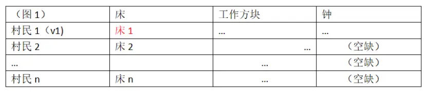
村庄中心是这样计算的：
从上至下从左往右遍历这个表格，遍历到的第一个poi就是村庄的中心，然后设置村庄大小为64*24*64。对于后面的所有poi,如果它们在当前村庄范围内则无事发生。但是如果它们在村庄范围外，村庄范围就会进行最小代价的扩张（就是在把新poi包括进村庄内的情况下扩大村庄范围）。见下图。这也意味者新村的中心不再是第一张床了。
【注意：哪个是村民1哪个是村民n是没法直接判定的，不是说第一个加入村庄的就是村民1，下面会提供一种利用游戏机制来确定村民1的方法】
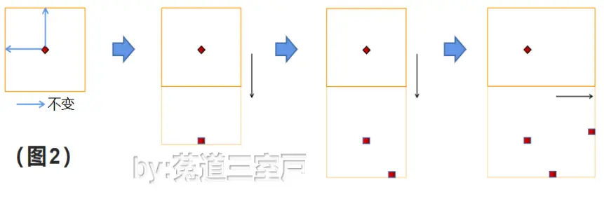
三．村庄中心的变化
当上述的表格发生更新的时候就会依据上面的算法重新计算村庄中心。这些行为包括:
有村民被移除和添加
村民和POI的绑定关系发生变化。
因此理论上如果上面两条没发生村庄中心就能稳下来，但是事与愿违，解绑发生太频繁了。
就算你啥事不干，村民也会在一定条件下和它的POI解绑，这个现象在服务器尤为明显。然后村庄就会重新计算村庄范围和中心，导致村庄中心的偏移。
四．村庄中心的确定与锁定
（1）确定：
我们先构造这样一个村庄：所有的村民和床都绑定好了，但是没有一个村民绑定其它POI（工作方块或钟），同时保证这个村庄未被扩大过。
这时候我们放一个工作方块或者钟，和他绑定的那个村民就是村民1（v1）。
(2) 锁定：
为了锁定村庄中心，所需要做的就是防止村民和poi的绑定关系发生变化，在刷铁机中更是需要阻止现有村民和poi解绑，来锁定村庄中心。
方法一：用水流不断更新村民的状态（泡脚），让村民不与床解绑。【或可理解为连续不断发送状态更新抑制村庄管理器更新】
方法二（无源码验证）：把村民关在一个仅能容下村民本身的空间里，阻止村民寻路。
【推测：村民解绑床的原因是村民无法通过寻路来触碰到床，所以如果从一开始就阻止村民进行寻路，就不会解绑床。】
一些范围
一．铁傀儡刷新范围
铁傀儡的刷新范围是村庄中心东南西北各8格，上下各3格的区域。如图。
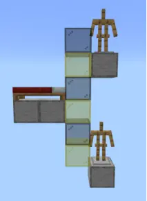
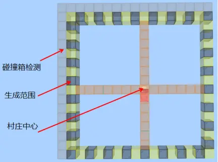
二．村庄加载范围
当玩家在加载范围内的时候村庄才可以正常加载（当然包括刷猫，铁等行为）该范围根据模拟距离的不同而变化。大致描述为 村庄范围的长宽高+模拟距离*8所形成的矩形（也就是说，此范围会随着村庄范围的扩大而扩大）。如图（铅锤方向同理）：
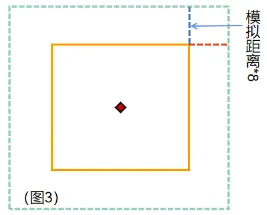
公式为（R为模拟距离，此处表示为格数）：
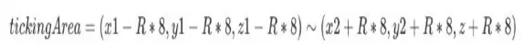
三．村庄检测范围
在一个村庄1的一定距离外新放下一个poi和村民，可以在此处建立一个新的村庄2而不是融合进村庄1的最近距离的集合。命名为村庄检测范围。
大致描述为 村庄距离的长宽高+64所形成的矩形（和村庄加载距离一样，会随着村庄范围扩大而扩大）。如图：
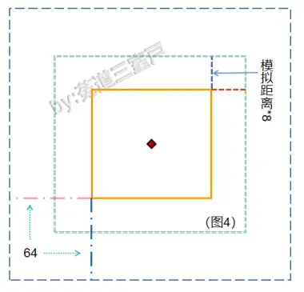
公式为：
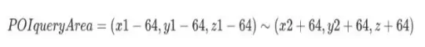
四．村庄半径R
以村庄中心为球心的某个球体的的半径。为该村庄的半径。
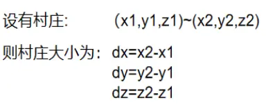
此时村庄半径根据dx，dy的不同而变化（大小与中心无关）。
dx=dz
R=1/2×√2dx
dx≠dy
R=1/2×（dx+dy）×0.6
(也就是说，一个标准的最小范围村庄，半径R=1/2×√2×64≈45.5。
最小半径（利用dx≠dz）R=1/2×（64+65）×0.6≈39)
五．距离检测范围
以村庄中心为球心，村庄半径R为半径的球体。poi到此村庄的距离都是检测poi所在的点到这个球面的距离。如图（poi在圆内时距离为负）：
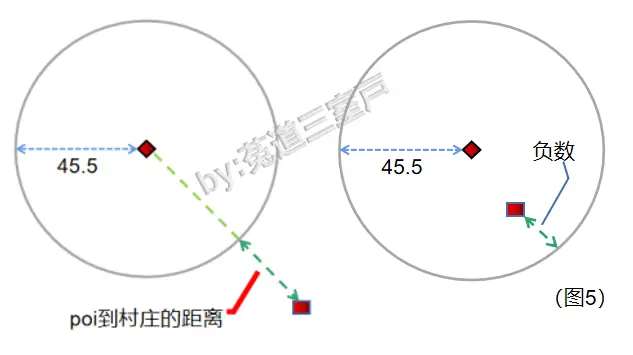
【猜测：堆叠村庄过程中，同时进入两个村庄的距离检测范围圆内（负值）时，poi的分配会不遵循就近原则（无源码验证）（与源码不符），这也是堆叠村庄的一大难点所在】
六．总结
（1）与村庄中心有关的是，这些范围所形成的图形的几何中心都在村庄中心。
（2）村庄加载范围和新建村庄范围都是在村庄范围的基础上扩大一定值形成的。
这些范围的一个立体图（没有铁傀儡刷新范围），方便大家理解。
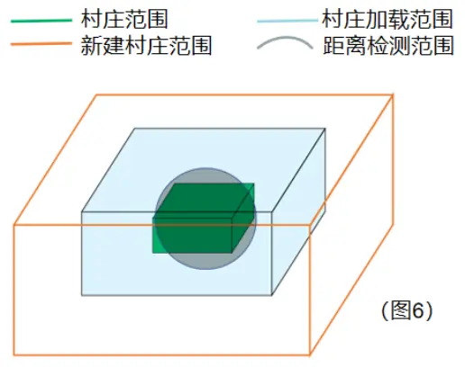
关于铁傀儡
生成前提
（1）一个村庄内包含20张（及以上）的床(包括绑定和未绑定的)。
（2）村庄人数为10时，可存在的铁傀儡上限为1。每多10人，上限增加1。
（3）村庄内3/4的村民在前一天与工作方块有过交互。
（4）村庄人口≤床
（5）所有村民都绑定床
二．生成判定
（1）可生成在固体方块或大部分拥有完整表面的方块（property 21）。（除树叶，冰，玻璃等）
（2）检测生成点的长宽高2×2×4范围，不能存在固体方块或property 21等一些特殊方块（如树叶，冰，玻璃）
（3）可在生成点上方有透明方块的情况下生成（如上方有半砖，围栏等）。
三．移除与迷失（移民）
（1）移除。铁傀儡被正常的从此村庄内清除，条件有：
1. 铁傀儡死亡
2. 铁傀儡进入其他维度
3. 内部TS值超过24000（见“迷失”）
【移除后村庄中铁傀儡数量-1】
（2）迷失（移民）：适用于村民和铁傀儡，如图：
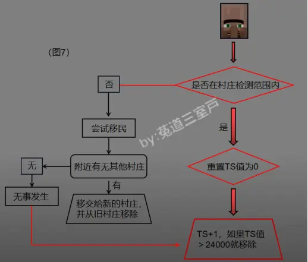
村庄更新还有一件事就是更新它所拥有的居民内部的TS值。而居民自己在居民刻的时候而且在村庄检测范围内的时候会把自己的TS值清零。村庄和村民对TS值的更新导致居民内部的TS值维持在不太高的状态。但是如果居民跑到村庄检测范围外就不会重置他自己的TS值，这样的居民暂且叫做”迷失状态”。此居民的TS值在达到24000（20分钟）时就会被原本所属的村庄移除。
【注意：（1）刷铁机密堆，铁傀儡生成点离两个村庄都比较近（具体范围待验证）的时候，其中一个村庄（V1）的铁傀儡会在生成的瞬间被另一个村庄（V2）夺走。此时铁傀儡会被分裂，同时在V1和V2中占用上限，但是此时铁傀儡实则已经脱离V1，会被判定为迷失，在TS值到达24000后移除。
（2）此时处死已经被V2夺走的铁傀儡，V1的铁傀儡数量值也不会减少（这是玄学），而是依然判定铁傀儡已经迷失。】
完~
by：菟道三室戸